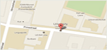

Hoog contrast
Hoog contrast
- Studeren en onderwijs
- Overzicht van opleidingen aan de faculteit rechten
- Contactpersonen onderwijs
- Veel gestelde vragen
- Onderzoek en innovatie
- Projecten en academische bibliografie
- Centre for Law and Cosmopolitan Values
- Onderzoeksinformatie
- Internationaal
- Website for international students
voor de workshops Schrijf je online in voor
het toelatingsexamen
Contact
Campus Drie EikenUniversiteitsplein 1 2610 Wilrijk (Antwerpen)
Tel: 03/265 26 39
Fax: 03/265 25 01 
Recente activiteiten
-
15
DEC Studenten controleren het hart van Antwerpse shoppers
Universiteit Antwerpen start haar Music for lifecampagne op de Meir -
17
NOV Vierduizend scholieren ontwerpen samen een fusiereactor
Op 17, 18, 22 en 23 november 2011 ontvangt de Universiteit Antwerpen 4000 leerlingen en leerkrachten tijdens zeven voorstellingen van de interactieve show Plasma's. Fusie! Energie? -
6
OKT 400 specialisten kwaliteitszorg komen naar Antwerpen
Van donderdag 17 tot en met zaterdag 19 november ontvangen de Universiteit Antwerpen en de Artesis Hogeschool het European Quality Assurance Forum.